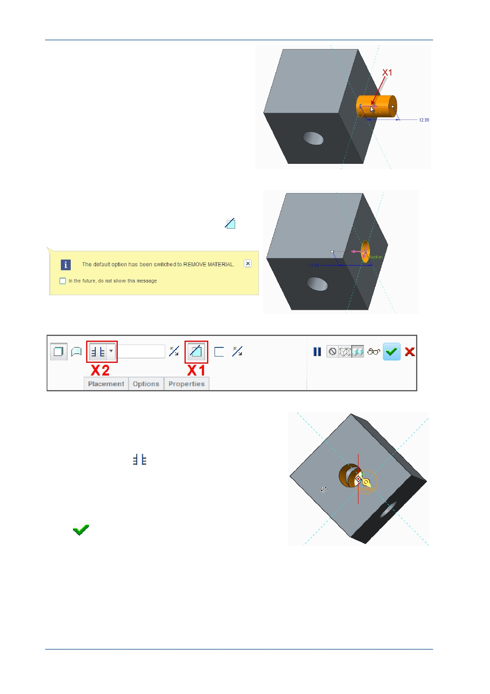

PTC Academic Program
9. To flip the direction of the feature, click
the small purple direction arrow ( X1 ).
Notice that when the extrude direction was
flipped into the model Remove Material
was automatically enabled ( X1 ).
10. Edit the depth of the extrude to intersect the
entire model.
From the depth drop-down menu, select
Through All
, ( X2 ) so that the extrude
feature will intersect the entire model.
Spin the model to see that the extrude feature
intersects the entire model.
In the dashboard, click Complete Feature
.
© 2012 PTC
Creo Parametric 2.0 Primer
Page 32